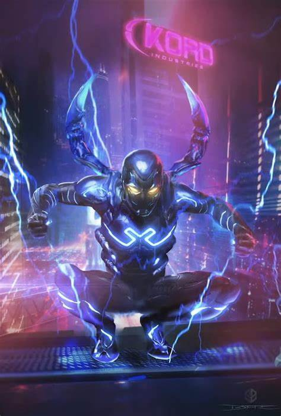
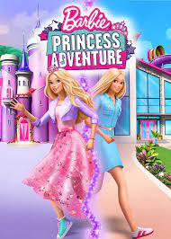

Blue Beetle

The Flash

Enjoy the latest from our WB Studios, collection in your nearest Cinemas.
Blue Beetle is an upcoming American superhero film based on the DC Comics character Jaime Reyes / Blue Beetle, produced by DC Studios and the Safran Company, and directed by Angel Manuel Soto from a screenplay by Gareth Dunnet-Alcocer. It is intended to be the 14th film in the DC Extended Universe (DCEU). The film stars Xolo Maridueña as Jaime Reyes / Blue Beetle alongside Adriana Barraza, Damián Alcázar, Elpidia Carrillo, Bruna Marquezine, Raoul Max Trujillo, Susan Sarandon, and George Lopez.
After being struck by lightning, Barry Allen wakes up from his coma to discover he's been given the power of super speed, becoming the Flash, and fighting crime in Central City.
To live in Barbie Land is to be a perfect being in a perfect place. Unless you have a full-on existential crisis. Or you're a Ken.
All the blockbusters and action Movies and TV

A newly fostered young boy in search of his mother instead finds unexpected super powers and soon gains a powerful enemy.

Nearly 5,000 years after he was bestowed with the almighty powers of the Egyptian gods--and imprisoned just as quickly--Black Adam is freed from his earthly tomb, ready to unleash his unique form of justice on the modern world.

A twisted tale of two estranged sisters whose reunion is cut short by the rise of flesh-possessing demons, thrusting them into a primal battle for survival as they face the most nightmarish version of family imaginable.
Thrills & Chills , we got you
"How to Sell Drugs Online (Fast)" is a captivating German comedy-drama series that debuted on Netflix on May 31, 2019. Created by Philipp Käßbohrer and Matthias Murmann, the show revolves around the unconventional entrepreneurial journey of high school student Moritz Zimmermann, played by Maximilian Mundt. Inspired by real events, Moritz teams up with his best friend Lenny Sander, portrayed by Danilo Kamperidis, to start an online drug-selling empire from their small town

"Dark" is a gripping German science fiction thriller series that premiered on Netflix on December 1, 2017. Created by Baran bo Odar and Jantje Friese, the show explores the interconnected lives of several families in the small town of Winden as they grapple with the mysteries of time travel and the consequences of their actions. The ensemble cast of "Dark" includes talented actors such as Louis Hofmann as Jonas Kahnwald, a key protagonist unraveling the secrets of the town, and Oliver Masucci as Ulrich Nielsen, a police officer determined to uncover the truth
"Breaking Bad" is an acclaimed television series that premiered on January 20, 2008. Created by Vince Gilligan, it follows the transformation of Walter White, a high school chemistry teacher turned methamphetamine manufacturer, brilliantly portrayed by Bryan Cranston. Aaron Paul delivers an unforgettable performance as Jesse Pinkman, Walter's former student and partner in crime.The series concluded on September 29, 2013, leaving an indelible mark on the television landscape and earning numerous awards and critical acclaim along the way.
Checkout Games we have in our catolougue
Hitman is a popular stealth video game series developed by IO Interactive. The franchise follows the adventures of Agent 47, a genetically enhanced assassin known for his meticulous planning, precise execution, and ability to blend into any environment.
Clash of Clans is a highly popular mobile strategy game developed and published by Supercell. It revolves around building and defending a village, training troops, and engaging in battles with other players from around the world.
The objective of Super Tunnel Rush is simple: survive as long as possible while dodging obstacles and collecting gems for points. The tunnel continuously moves forward, and players must quickly react to avoid colliding with walls, barriers, and other obstacles that come their way.